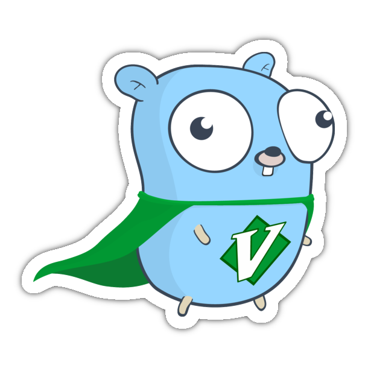
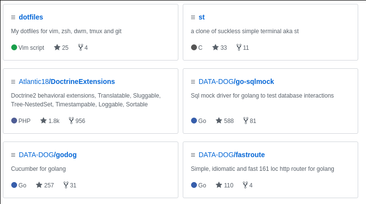

Who's the dude talking
Gediminas Morkevičius aka @l3pp4rd
- I code with - GO, Java, C
- Less with PHP, javascript
- Hardcore - ViM, Arch Linux, DWM, St user
- Fan of suckless.org tools
- I share my stuff at github.com/l3pp4rd
I work at DATA-DOG

And in partnership with Satalia

We solve hard problems
I'm also the author of a few open source projects
And a member of Cucumber team

I maintain cucumber implementation for golang
We've all went to school
And most likely only a few got a chance, to learn from great teachers
Write a correct answer, without understanding the reason, meaning or value
Have you read Stream implementation in Java 8 standard library?
This is a great example of how we can leverage lambdas and their composition
Have you seen Rich Hickey`s talk Simple Made Easy?
I'll talk about a small part of it Inheritance and Composition
Thank you
Slides are available at: slides.gediminasm.org
Powered by: Revealjs